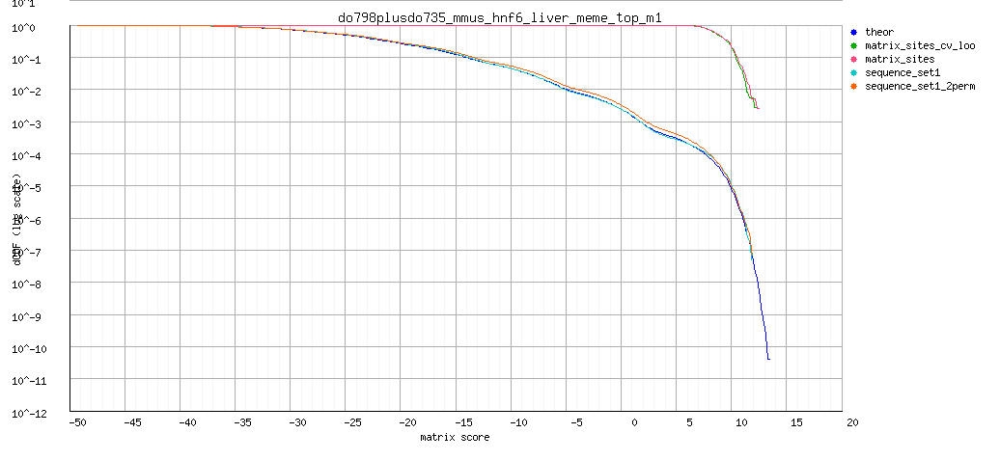

RSA-tools - matrix-quality result
Analysis: matrix-quality result: do798plusdo735_mmus_hnf6_liver_meme_top_m1 (06/09/2014 00:34)
matrix-quality result: Motif enrichment in CEBPa dog liver do798plusdo735_mmus_hnf6_liver_meme_top_m1
Command: matrix-quality -v 0 -html_title ' Motif enrichment in CEBPa dog liver ' -ms $RSAT/public_html/tmp/wwwrun/2014/09/05/matrix-quality_2014-09-05.235841_QFnNnl/input_matrix -matrix_format transfac -pseudo 1 -kfold 0 -seq sequence_set1 $RSAT/public_html/tmp/wwwrun/2014/09/05/matrix-quality_2014-09-05.235841_QFnNnl/sequence1.fasta -seq_format fasta -perm sequence_set1 2 -bgfile $RSAT/public_html/data/genomes/Canis_familiaris_EnsEMBL/oligo-frequencies/2nt_upstream-noorf_Canis_familiaris_EnsEMBL-ovlp-1str.freq.gz -bg_format oligo-analysis -bg_pseudo 0.01 -archive -o $RSAT/public_html/tmp/wwwrun/2014/09/05/matrix-quality_2014-09-05.235841_QFnNnl/matrix-quality_2014-09-05.235841
Figures
Matrix logo
Decreasing cumulative distributions (dCDF)
Decreasing cumulative distributions (dCDF), logarithmic Y axis

ROC curve (logarithmic X axis)
Matrix information
; convert-matrix -v 1 -from transfac -i $RSAT/public_html/tmp/wwwrun/2014/09/05/matrix-quality_2014-09-05.235841_QFnNnl/do798plusdo735_mmus_hnf6_liver_meme_top_m1/matrix-quality_2014-09-05.235841_do798plusdo735_mmus_hnf6_liver_meme_top_m1_matrix.tf -to tab -o $RSAT/public_html/tmp/wwwrun/2014/09/05/matrix-quality_2014-09-05.235841_QFnNnl/do798plusdo735_mmus_hnf6_liver_meme_top_m1/matrix-quality_2014-09-05.235841_do798plusdo735_mmus_hnf6_liver_meme_top_m1_matrix_info.txt -bgfile $RSAT/public_html/tmp/wwwrun/2014/09/05/matrix-quality_2014-09-05.235841_QFnNnl/matrix-quality_2014-09-05.2358412nt_upstream-noorf_Canis_familiaris_EnsEMBL-ovlp-1str.freq.gz_inclusive.tab -bg_format inclusive -return counts,frequencies,weights,info,parameters,sites,logo -logo_format png -logo_opt '-e -M -t do798plusdo735_mmus_hnf6_liver_meme_top_m1 ' -logo_file $RSAT/public_html/tmp/wwwrun/2014/09/05/matrix-quality_2014-09-05.235841_QFnNnl/do798plusdo735_mmus_hnf6_liver_meme_top_m1/matrix-quality_2014-09-05.235841_do798plusdo735_mmus_hnf6_liver_meme_top_m1_logo
; Input files
; input /home/rsat/rsat/public_html/tmp/wwwrun/2014/09/05/matrix-quality_2014-09-05.235841_QFnNnl/do798plusdo735_mmus_hnf6_liver_meme_top_m1/matrix-quality_2014-09-05.235841_do798plusdo735_mmus_hnf6_liver_meme_top_m1_matrix.tf
; prior /home/rsat/rsat/public_html/tmp/wwwrun/2014/09/05/matrix-quality_2014-09-05.235841_QFnNnl/matrix-quality_2014-09-05.2358412nt_upstream-noorf_Canis_familiaris_EnsEMBL-ovlp-1str.freq.gz_inclusive.tab
; Input format transfac
; Output files
; output /home/rsat/rsat/public_html/tmp/wwwrun/2014/09/05/matrix-quality_2014-09-05.235841_QFnNnl/do798plusdo735_mmus_hnf6_liver_meme_top_m1/matrix-quality_2014-09-05.235841_do798plusdo735_mmus_hnf6_liver_meme_top_m1_matrix_info.txt
; Output format tab
; pseudo-weight 1
; Background model
; Strand undef
; Background pseudo-frequency 0.01
; Residue probabilities
; a 0.26457
; c 0.23303
; g 0.23983
; t 0.26257
a 141 93 50 13 386 0 0 0 386 0 0 63 114 69 52
c 77 71 96 83 0 0 144 0 0 19 168 47 93 97 90
g 69 88 101 79 0 0 0 386 0 0 8 114 80 43 73
t 99 134 139 211 0 386 242 0 0 367 210 162 99 177 171
//
a 0.4 0.2 0.1 0.0 1.0 0.0 0.0 0.0 1.0 0.0 0.0 0.2 0.3 0.2 0.1
c 0.2 0.2 0.2 0.2 0.0 0.0 0.4 0.0 0.0 0.0 0.4 0.1 0.2 0.3 0.2
g 0.2 0.2 0.3 0.2 0.0 0.0 0.0 1.0 0.0 0.0 0.0 0.3 0.2 0.1 0.2
t 0.3 0.3 0.4 0.5 0.0 1.0 0.6 0.0 0.0 0.9 0.5 0.4 0.3 0.5 0.4
//
a 0.3 -0.1 -0.7 -2.0 1.3 -6.0 -6.0 -6.0 1.3 -6.0 -6.0 -0.5 0.1 -0.4 -0.7
c -0.2 -0.2 0.1 -0.1 -6.0 -6.0 0.5 -6.0 -6.0 -1.5 0.6 -0.6 0.0 0.1 0.0
g -0.3 -0.1 0.1 -0.2 -6.0 -6.0 -6.0 1.4 -6.0 -6.0 -2.4 0.2 -0.1 -0.8 -0.2
t -0.0 0.3 0.3 0.7 -6.0 1.3 0.9 -6.0 -6.0 1.3 0.7 0.5 -0.0 0.6 0.5
//
a 0.1 -0.0 -0.1 -0.1 1.3 -0.0 -0.0 -0.0 1.3 -0.0 -0.0 -0.1 0.0 -0.1 -0.1
c -0.0 -0.0 0.0 -0.0 -0.0 -0.0 0.2 -0.0 -0.0 -0.1 0.3 -0.1 0.0 0.0 0.0
g -0.1 -0.0 0.0 -0.0 -0.0 -0.0 -0.0 1.4 -0.0 -0.0 -0.1 0.1 -0.0 -0.1 -0.0
t -0.0 0.1 0.1 0.4 -0.0 1.3 0.5 -0.0 -0.0 1.2 0.4 0.2 -0.0 0.3 0.2
//
; Sites 386
>site_0
ATTTATTGATTTATT
>site_1
ATTTATTGATTTTTT
>site_2
ATGTATTGATTTATT
>site_3
ATTTATTGATTGATT
>site_4
ATGTATTGATTGATT
>site_5
TTTTATTGATTTATT
>site_6
ATTTATTGATTGGTT
>site_7
CTTTATTGATTTATT
>site_8
ACTTATTGATTTATT
>site_9
TTTTATTGATCTTTT
>site_10
AAGTATTGATCTATT
>site_11
TTGTATTGATTTTTT
>site_12
TTTTATTGATTGATT
>site_13
ATCTATTGATCTGTT
>site_14
ATGTATTGATTTTCT
>site_15
ATGTATTGATTTTCT
>site_16
AAGTATTGATTGATT
>site_17
ATTTATTGATCTTCT
>site_18
ACTTATTGATTTGTT
>site_19
TATTATTGATTTCTT
>site_20
AGGTATTGATTGGTT
>site_21
ATCTATCGATTGATT
>site_22
ATTCATTGATTTATT
>site_23
TTTTATCGATTGATT
>site_24
CTTTATTGATCGCTT
>site_25
ATTTATTGATTAATT
>site_26
AGGTATTGATTTCTC
>site_27
ATCTATCGATCGATT
>site_28
AGGTATTGATTTCCT
>site_29
GGTTATTGATTTTTT
>site_30
GTCTATTGATCTATT
>site_31
ATTGATTGATTGATT
>site_32
ATTTATTGATTGTTG
>site_33
AATTATTGATTGATC
>site_34
TCTTATTGATCTTTT
>site_35
ATTGATTGATTGATT
>site_36
ATTGATTGATTGATT
>site_37
ATTGATTGATTGATT
>site_38
ATTGATTGATTGATT
>site_39
AATTATTGATCTCTC
>site_40
ATTGATTGATTGATT
>site_41
GGCTATTGATTTATT
>site_42
ATTGATTGATTGATT
>site_43
ATTGATTGATTGATT
>site_44
ATTGATTGATTGATT
>site_45
ATTGATTGATTGATT
>site_46
ATTGATTGATTGATT
>site_47
ATCTATTGATCTGCT
>site_48
GAGTATTGATTTTTT
>site_49
ATTTATTGATTTATA
>site_50
CAGTATTGATTGATT
>site_51
AATTATTGATTTCTG
>site_52
AGTGATTGATTTTTT
>site_53
ATTGATTGATCGATT
>site_54
ATTTATTGATCACTT
>site_55
CCCTATTGATTTATT
>site_56
TATTATTGATTGGTT
>site_57
GTTTATTGATTTTTC
>site_58
CTGTATTGATTTTCT
>site_59
AGGTATTGATTTCTG
>site_60
TTCTATTGATTGATC
>site_61
TGTTATTGATCTTTC
>site_62
GATTATTGATCTGTT
>site_63
TTTTATTGATCGCCT
>site_64
ATTGATTGATTGGTT
>site_65
CTTTATTGATTTTTG
>site_66
TGTTATTGATCTTTC
>site_67
TCCTATTGATCTTTT
>site_68
TACTATTGATTTACT
>site_69
ATGTATTGATCCATT
>site_70
GTTTATTGATTGCCT
>site_71
GATTATTGATTTACT
>site_72
ATTTATTGATCTCGT
>site_73
TTTCATTGATTTGTT
>site_74
TTGTATTGATCTTTG
>site_75
AGTTATCGATCTGTC
>site_76
ATCTATCGATCGATC
>site_77
ATCGATTGATCGATT
>site_78
ATGCATTGATTTATC
>site_79
TTCTATTGATTAATT
>site_80
AAGGATTGATTGATT
>site_81
CACTATTGATCGCTT
>site_82
CTGTATTGATCTCTG
>site_83
TTGTATTGATCTGTG
>site_84
TACTATTGATTTTTC
>site_85
AGCCATTGATCTCTT
>site_86
CAGTATTGATTTTCT
>site_87
ACTTATTGATTACTT
>site_88
CAGTATTGATTTTTC
>site_89
TGCTATTGATTTCTG
>site_90
TGTTATTGATCTGTG
>site_91
AGGTATTGATTCCTT
>site_92
GATTATTGATTGACT
>site_93
TTTTATTGATTGGAT
>site_94
TTTTATTGATTGGAT
>site_95
TTTCATTGATCGTTT
>site_96
ATTGATTGATCGATC
>site_97
CTCTATTGATTTTAT
>site_98
CTATATTGATTTGTT
>site_99
ATTTATTGATTCTCT
>site_100
AGCCATCGATTTCTT
>site_101
AGTTATCGATCGAAT
>site_102
AGCTATTGATTGCCC
>site_103
TTATATTGATCGCTT
>site_104
AGCTATCGATTTTAT
>site_105
TAGCATTGATTGATT
>site_106
TTTTATTGATCTTAC
>site_107
CTTTATTGATTTCAC
>site_108
GATTATTGATCTAAT
>site_109
CAGTATTGATCGCCT
>site_110
TTTGATTGATTTGTC
>site_111
GCTTATTGATCTATG
>site_112
TGTTATTGATTCCTT
>site_113
ATCGATTGATCGATC
>site_114
ATCGATTGATCGATC
>site_115
GTGTATTGATTTCCG
>site_116
GTGTATTGATCAGTT
>site_117
GGTTATTGATTAGTT
>site_118
TGGTATTGATCGACC
>site_119
ATTGATCGATCGATC
>site_120
ATGTATTGATTGCAG
>site_121
AAGTATTGATTTTAG
>site_122
ACCTATTGATTAACT
>site_123
ATTTATTGATTTGGG
>site_124
AGGGATCGATTTTCT
>site_125
GGGTATTGATTGACC
>site_126
CGTGATTGATTTCCT
>site_127
CTCCATTGATTTTTC
>site_128
AGGGATTGATTAATT
>site_129
TGATATCGATTGATT
>site_130
AGGTATTGATTCCTC
>site_131
CACTATCGATCTTTC
>site_132
ATCTATCGATCGGCC
>site_133
GTGCATTGATTTTCT
>site_134
GCCTATTGATTTCAT
>site_135
GTTGATTGATTTTTG
>site_136
ATCCATCGATCTATG
>site_137
AGGCATTGATCTCAT
>site_138
TTTCATTGATTTTCC
>site_139
AATGATCGATTTGCT
>site_140
GAATATTGATTGGTT
>site_141
CTATATTGATTAATT
>site_142
AGCGATCGATCTCTC
>site_143
TCTTATTGATTGTGT
>site_144
GCTTATCGATCTCTG
>site_145
CATTATCGATCACTT
>site_146
AACTATTGATTATTG
>site_147
CTTTATTGATTGCAG
>site_148
AACTATTGATCTAGC
>site_149
CACTATCGATCTCTG
>site_150
GTTTATCGATTGAAC
>site_151
TGCTATTGATCGCTA
>site_152
ACTTATTGATCTAGG
>site_153
ATTTATTGATTCTGT
>site_154
AATCATTGATTTTTA
>site_155
CATTATTGATTTTAG
>site_156
ACCGATCGATTTCTC
>site_157
CGCTATTGATTATCT
>site_158
TTCTATTGATCACTG
>site_159
AGGGATCGATTTTAT
>site_160
GTAGATTGATTTTTT
>site_161
CTTGATCGATCGCCT
>site_162
CATTATTGATTCCTC
>site_163
CTGGATCGATTGCTC
>site_164
GTGGATCGATCTCTC
>site_165
CATTATTGATTTCCA
>site_166
CAGTATTGATCTGAC
>site_167
TAGCATTGATTGGTC
>site_168
CTGTATTGATCCATG
>site_169
ATCGATTGATCAATC
>site_170
CTCGATTGATCGATG
>site_171
AATTATTGATTTGAA
>site_172
ATTCATTGATTTCCA
>site_173
ACTTATTGATTGGGC
>site_174
CATTATTGATCGGTA
>site_175
TGGGATCGATTTGCT
>site_176
ACTTATTGATTAAAC
>site_177
AGATATCGATTGCAT
>site_178
AGTCATTGATTCACT
>site_179
ACCTATTGATTGGAG
>site_180
TTGGATCGATTTTCC
>site_181
AACCATTGATCCATT
>site_182
CAGCATCGATTTTTC
>site_183
TAGCATCGATCTTCT
>site_184
AGATATCGATTTTGT
>site_185
GGATATTGATTTGAT
>site_186
CTCTATTGATTGGGC
>site_187
GGTTATCGATCACTC
>site_188
TCTCATCGATCTGCT
>site_189
GAGTATTGATTATTG
>site_190
TCCGATCGATTTCTC
>site_191
ATCGATTGATTCCCT
>site_192
ACTTATCGATCAGTG
>site_193
TGTGATTGATTTGTA
>site_194
ACTCATCGATCGAAT
>site_195
TTCTATTGATTATGT
>site_196
TATTATCGATCAGCT
>site_197
CCCTATTGATCACTC
>site_198
GTGGATCGATCTGTG
>site_199
TCCCATTGATTTCCC
>site_200
AAGGATTGATTTTAG
>site_201
TTTCATTGATTATTG
>site_202
TGCGATCGATCGTTC
>site_203
TAATATTGATCGCAT
>site_204
TACCATTGATTCATT
>site_205
TTGCATTGATTTACA
>site_206
CCCCATCGATTTTCT
>site_207
TTGCATTGATTAGCT
>site_208
TCATATCGATTGATG
>site_209
TCTTATTGATTGAAA
>site_210
CCGTATTGATCAGTG
>site_211
TTTGATCGATCAACT
>site_212
CAGTATTGATCTTGG
>site_213
TTTGATTGATTTAGG
>site_214
AAACATCGATTTTCT
>site_215
AGGGATCGATCTGTA
>site_216
CACCATCGATCGACT
>site_217
TGGGATCGATTTGCC
>site_218
GGTCATCGATTTCCC
>site_219
GGCCATTGATTGACC
>site_220
ATCGATTGATCTTGG
>site_221
GGATATTGATCTTGT
>site_222
TATTATCGATCCTTG
>site_223
GGGGATCGATCGGCT
>site_224
GATTATTGATCCCAT
>site_225
CCCTATTGATCCATG
>site_226
ATGGATCGATTGCAG
>site_227
TCCCATCGATCTCTG
>site_228
GCCCATTGATTGAAT
>site_229
AAATATCGATTGAAC
>site_230
GCCTATTGATCTGAG
>site_231
AGCCATTGATTCATG
>site_232
CGGTATTGATCATGT
>site_233
GTGCATCGATCGCAT
>site_234
GATTATTGATTATGT
>site_235
CTCTATTGATTCCTA
>site_236
CAGTATCGATCAGTG
>site_237
ATCTATTGATCCTCA
>site_238
CAGGATTGATTGCTA
>site_239
GAGCATTGATTAATC
>site_240
GGGCATCGATTAGTT
>site_241
GGCCATCGATCTGTG
>site_242
AGATATTGATCCTTG
>site_243
TGTCATTGATTATAT
>site_244
CAGTATCGATTGGAG
>site_245
TACGATCGATTGCAT
>site_246
ATTTATCGATCCACA
>site_247
ACCTATTGATCCTTA
>site_248
GCTGATCGATTATTT
>site_249
CCCCATCGATCTTTG
>site_250
AAACATTGATTTTTA
>site_251
GCCGATCGATCGCCT
>site_252
GACTATTGATCGGCA
>site_253
CTGGATCGATCACCT
>site_254
GGGTATCGATCAGAT
>site_255
ACCCATTGATTGCAG
>site_256
AGCTATTGATCAGCA
>site_257
TAGCATCGATCTCTA
>site_258
TAGCATTGATTTCCA
>site_259
GGCCATTGATTACTC
>site_260
GGCGATCGATCGCTG
>site_261
ACTCATTGATTATGT
>site_262
AGGTATTGATCCAGG
>site_263
CAAGATCGATTTTCT
>site_264
GGTTATTGATTGTGA
>site_265
GCGGATCGATTGACC
>site_266
CGGGATCGATTGAAC
>site_267
CTCCATTGATCTGCA
>site_268
AGTCATCGATCGGAG
>site_269
AAATATTGATTACTA
>site_270
CCCCATCGATCTTCC
>site_271
CTCAATTGATTTTTT
>site_272
ACAGATCGATTTTAT
>site_273
TACTATCGATCCACC
>site_274
AAGCATCGATCCTTC
>site_275
CCAGATCGATTTTCT
>site_276
ATTCATCGATTCCCG
>site_277
GTGCATCGATCCATC
>site_278
GTCTATTGATTGGGA
>site_279
CAATATTGATCCCCT
>site_280
CCTTATCGATTACAC
>site_281
AGATATTGATCTAGA
>site_282
GACTATTGATCCAGT
>site_283
CAGCATCGATCTGTA
>site_284
GCCCATCGATCTCCC
>site_285
GCCTATTGATCACTA
>site_286
TCGCATTGATCGCAG
>site_287
TGTGATTGATTAGTA
>site_288
GAGTATCGATCGTGG
>site_289
TTGTATCGATTCTGC
>site_290
GAGTATTGATCATAG
>site_291
CCACATCGATCTTCT
>site_292
GAATATTGATTAGTG
>site_293
GTCCATTGATCATCC
>site_294
ATTTATTGATGGACT
>site_295
CCCTATTGATTAACA
>site_296
CAGTATCGATCAGTA
>site_297
AGGCATCGATCAGCC
>site_298
GTTCATCGATTGGGC
>site_299
ACAGATCGATTTTTA
>site_300
TATCATCGATCGACA
>site_301
TGATATCGATTTTGG
>site_302
CGTGATCGATCTGCA
>site_303
GACGATTGATTGACA
>site_304
CCCCATCGATCTCAC
>site_305
CCCCATCGATCTCAC
>site_306
CATTATTGATCAAAA
>site_307
CAGCATCGATTTCCA
>site_308
CTTGATCGATCCACC
>site_309
CCCCATCGATCTCAC
>site_310
TGTTATTGATCCAAA
>site_311
AATTATTGACCTGCT
>site_312
TTGTATCGATCCGCA
>site_313
TGTGATCGATCGGGC
>site_314
TCAGATCGATTTCCC
>site_315
ACACATTGATCTTAG
>site_316
GAATATTGATCACCC
>site_317
TTTTATCGACCGCTT
>site_318
TCATATCGATCGAAG
>site_319
TCATATTGATCCTAT
>site_320
CAGTATTGATGTATT
>site_321
AACAATTGATTTGTC
>site_322
ATGTATCGACTGACT
>site_323
CCGCATTGATCCACC
>site_324
AAACATCGATTAGCT
>site_325
CCGCATCGATCCCTC
>site_326
ACACATTGATCATTG
>site_327
TACTATTGATGGATT
>site_328
AATTATTGACCGATG
>site_329
GCTGATCGATCTGGC
>site_330
CCAGATCGATTTAGT
>site_331
GGCCATCGATCATAT
>site_332
AGGGATCGATTAGAG
>site_333
TCCCATCGATCGCAG
>site_334
TTTTATCGATTAGGA
>site_335
AGGCATCGATCGTGA
>site_336
CGGTATCGATTCAAA
>site_337
GAACATCGATTCCTT
>site_338
TAGCATCGATCGTGG
>site_339
GAAGATCGATTGGCC
>site_340
AGATATTGACTTACT
>site_341
ATTTATTGATGTGTA
>site_342
AGGAATCGATTTTCC
>site_343
CCACATCGATCTAAC
>site_344
GCTTATCGATCACGG
>site_345
TAGGATCGATTACAG
>site_346
TACAATCGATTTCCT
>site_347
ATAGATCGATTCTGT
>site_348
TGTTATTGATGTTAT
>site_349
GCTTATCGATCCGGC
>site_350
AGGAATCGATTGTAT
>site_351
TCACATTGATTGGCA
>site_352
TGGTATCGATCCAGA
>site_353
AGTAATTGATTAAAT
>site_354
TGTGATCGATCAAGG
>site_355
TTCCATCGACCTTTT
>site_356
GGATATTGATCCTCA
>site_357
TTAAATCGATTTTCT
>site_358
GTAGATTGATTAAGC
>site_359
TCTTATTGATGTGAT
>site_360
TCTAATCGATCTGTG
>site_361
AATTATCGATGTTCG
>site_362
AGTTATCGACTTCAG
>site_363
TCACATCGATCAGCC
>site_364
CCTAATCGATTAGTT
>site_365
AGGAATCGATTCTCT
>site_366
ATCCATCGACCGCTC
>site_367
TCATATCGATCCTGC
>site_368
CTAAATCGATCTCCT
>site_369
TGCCATCGATTCAAA
>site_370
GCAGATTGATCTAGA
>site_371
TGATATTGATCCTGA
>site_372
AAATATTGACTGTAT
>site_373
TGCTATCGACCTGCC
>site_374
CTCTATTGACCTCCA
>site_375
TACAATCGATTTCAC
>site_376
TTGGATCGATGTGCT
>site_377
TCACATCGATCCCAC
>site_378
AGTCATTGACTGTCA
>site_379
TGGCATTGACTTGAC
>site_380
CGTTATCGACCAGCC
>site_381
CTGGATTGACCGGAG
>site_382
AACTATCGACCCCGC
>site_383
GGGTATCGACCACAG
>site_384
CAGTATCGACCGAGA
>site_385
TTGAATTGACCGACG
;
; Matrix parameters
; Columns 15
; Rows 4
; Alphabet a|c|g|t
; Prior a:0.264573486852274|c:0.233031168150323|g:0.239829744535815|t:0.262565600461588
; program transfac
; matrix.nb 1
; accession do798+do735_mmus_hnf6_liver_meme_top_m1
; AC do798+do735_mmus_hnf6_liver_meme_top_m1
; id do798+do735_mmus_hnf6_liver_meme_top_m1
; name do798plusdo735_mmus_hnf6_liver_meme_top_m1
; description atbtATyGATykmyt
; statistical_basis 386 sequences
; sites 386
; min.prior 0.233031
; alphabet.size 4
; max.bits 2
; total.information 8.52231
; information.per.column 0.568154
; max.possible.info.per.col 1.45658
; consensus.strict atttATtGATttatt
; consensus.strict.rc AATAAATCAATAAAT
; consensus.IUPAC atbtATyGATykmyy
; consensus.IUPAC.rc RRKMRATCRATAVAT
; consensus.regexp at[cgt]tAT[ct]GAT[ct][gt][ac][ct][ct]
; consensus.regexp.rc [AG][AG][GT][AC][AG]ATC[AG]ATA[ACG]AT
; residues.content.crude.freq a:0.2361|c:0.1701|g:0.1798|t:0.4140
; G+C.content.crude.freq 0.349914
; residues.content.corrected.freq a:0.2362|c:0.1703|g:0.1799|t:0.4136
; G+C.content.corrected.freq 0.350231
; min(P(S|M)) 1.93225e-30
; max(P(S|M)) 0.000199951
; proba_range 0.000199951
; Wmin -47.3
; Wmax 11.7
; Wrange 59
; logo file:/home/rsat/rsat/public_html/tmp/wwwrun/2014/09/05/matrix-quality_2014-09-05.235841_QFnNnl/do798plusdo735_mmus_hnf6_liver_meme_top_m1//matrix-quality_2014-09-05.235841_do798plusdo735_mmus_hnf6_liver_meme_top_m1_logo_m1.png
; logo file:/home/rsat/rsat/public_html/tmp/wwwrun/2014/09/05/matrix-quality_2014-09-05.235841_QFnNnl/do798plusdo735_mmus_hnf6_liver_meme_top_m1//matrix-quality_2014-09-05.235841_do798plusdo735_mmus_hnf6_liver_meme_top_m1_logo_m1_rc.png
; Host name rsat
; Job started 2014-09-06.002005
; Job done 2014-09-06.002005
; Seconds 0.31
; user 0.31
; system 0.02
; cuser 0.32
; csystem 0.01
Result files
{kind=link}
{kind=link}